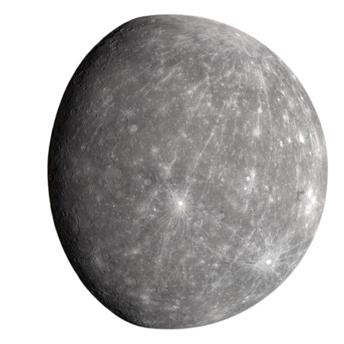
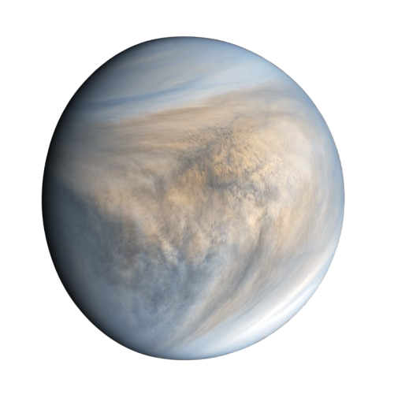
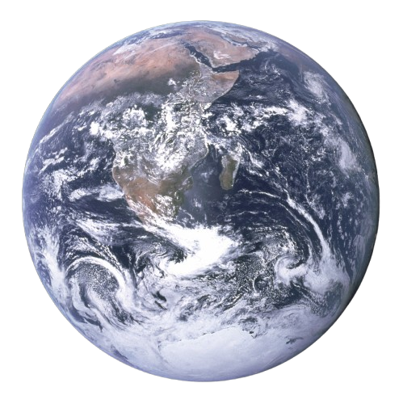
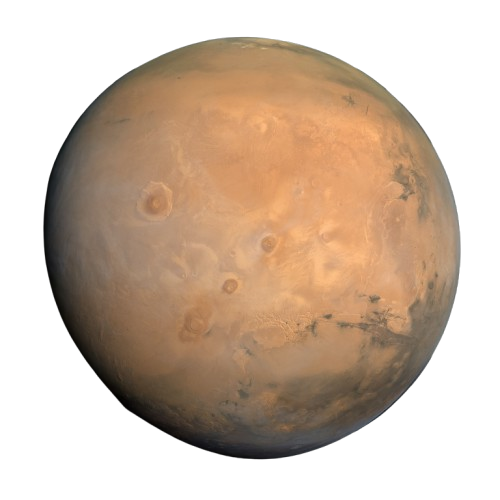
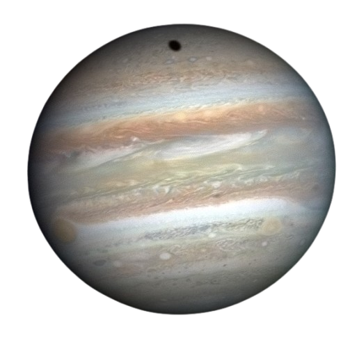
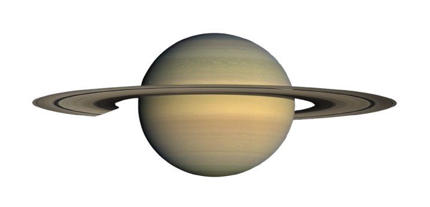
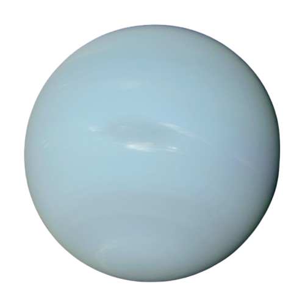

a massive, fiery ball of hydrogen and helium undergoing constant
nuclear fusion. This process produces the light and heat that make
life on Earth possible.
The Sun’s powerful gravitational pull
keeps the solar system together, binding everything — from tiny dust particles to massive planets — in a cosmic dance around it.
The Sun's energy powers the seasons, weather patterns, and climates of its planets, making it the life source of our solar neighborhood.
Our home, earth
A small blue rock within a vast orbital system of 8 very unique planets
At the heart of it all lies the Sun
The Inner 4:
The "Rocky Planets"
Closest to the Sun are the four terrestrial planets, known as the
“inner planets.”
They share a rocky composition and solid surfaces.

Mercury
the smallest and fastest, orbits the Sun in just 88
days.

Venus
Earth’s “twin” in size, hosts intense heat and thick
clouds.

Earth
the only known home for life, supports diverse
ecosystems.

Mars
the Red Planet, has the tallest volcano in the solar
system.
An asteroid belt separates the inner and outer planets of the system
Outside of Mars there's a vast ring of rocky debris, ranging from small stones to the dwarf planet Ceres. It’s thought to be remnants of a planet that never formed due to Jupiter's strong gravitational pull.
The Outer 4:
The Mighty "Gas and Ice Giants"
Further from the Sun lie the gas giants: Jupiter and Saturn, and the ice giants: Uranus and Neptune. Often refered to as the outer 4.

Jupiter
the largest planet, has swirling storms and the Great
Red Spot—a giant storm system that has raged for centuries.

Saturn
known for its iconic rings, is surrounded by a complex
ring system of icy particles.

Uranus
orbits on its side, creating extreme seasons with 42
years of sunlight followed by 42 years of darkness. Its
blue-green color comes from methane in its atmosphere.

Neptune
the farthest planet, has fierce winds reaching 1,500
miles per hour and a vibrant blue color due to atmospheric
methane. Its storms, like the Great Dark Spot, appear and
vanish.
Somewhere, something incredible is waiting to be known
- Carl Sagan
Credits
This scrolling background presentation has been part of a lection and assignment
at Kodehode.
October and November 2024
The subject was presented by Emil Endresen
Creatively altered and further developed by
Hans Martin Rundberg Austestad
Thank you for your attention
Click to go back to top